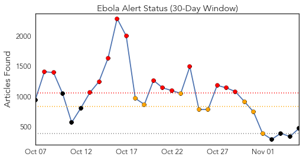
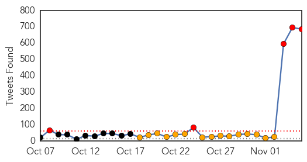
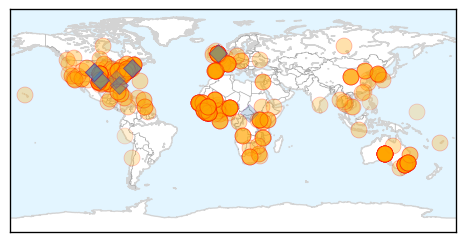
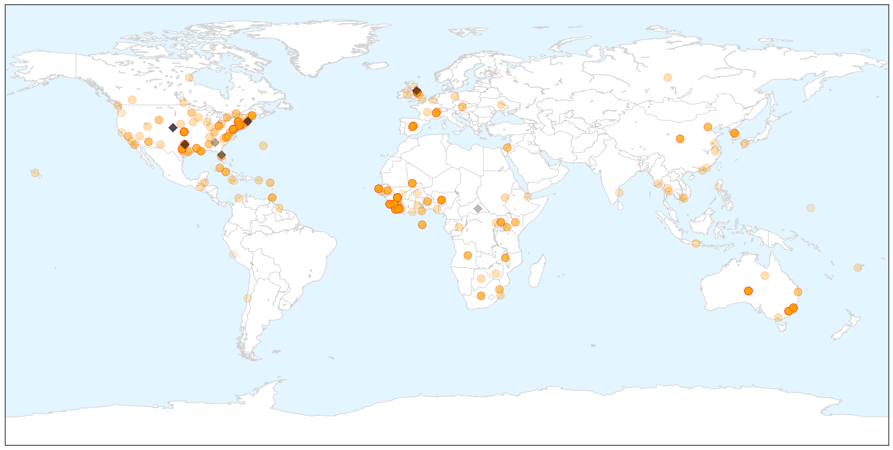
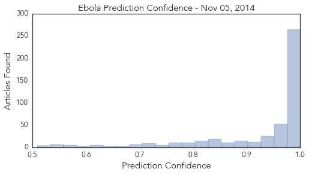

Ebola
30-Day Web Trend
14 alerts, 8 warnings

30-Day Twitter Trend
2 alerts, 9 warnings

Article Locations

X

Article Confidences
Top Articles:
- 1.000
- The Ebola Outbreak Is Getting Worse in Sierra Leone
- 1.000
- Alamance Co. Health Department Monitoring 5 People For Ebola
- 1.000
- UW Ebola preparedness plans reflect changing situation
- 1.000
- Foreign Affairs Minister leads Bahamas delegation to CARICOM Ebola meeting
- 1.000
- Food endangers quarantine
- 1.000
- Critical lessons to learn from Ebola outbreaks
- 1.000
- Ebola: health fears stop British journalist from hosting awards
- 1.000
- Guest Opinion: What you should know about Ebola
- 1.000
- Ebola Hits Health Care Access for Other Diseases
- 1.000
- US Ebola Researchers Plead For Access To Virus Samples
- 1.000
- Bermuda to screen visitors who travelled to West Africa
- 1.000
- Ebola outbreak: The scientist heading for Guinea who thinks he may find a cure
- 1.000
- Ebola Outbreak 2014: Spain To Be Declared Ebola-Free
- 1.000
- Lack Of Virus Samples In US Hampers Efforts To Track Its Changes
- 1.000
- Australia to Hire Private Medical Firm to Help Sierra Leone Contain Virus
- 1.000
- Ebola researchers can't get access to virus samples
- 1.000
- Latest Updates WHO Lowers Ebola Death Toll Estimate, Says Virus Slowing in Liberia
- 1.000
- Spotlight: More aid, funds needed in anti-Ebola fight
- 1.000
- US Ebola researchers plead for access to virus samples
- 1.000
- Ebola’s orphans: Survivors care for children left behind by disease
- 1.000
- U.S. Aid in Africa Reduced Ebola Deaths in Liberia by 50%
- 1.000
- WHO declares end of Ebola outbreak in Sierra Leone, but neighbor Guinea struggles to end virus
- 1.000
- Thousands break Ebola quarantine to find food
- 1.000
- Beware of the Ebola
- 1.000
- Is quarantine merited for Ebola-exposed health-care workers? The science says no
- 1.000
- Mission Health lays out Ebola plans
- 1.000
- Fearing Ebola? Doctors say get a flu shot
- 1.000
- Ohio Ebola Scare Ends as Infected Nurse’s Contacts Clear
- 1.000
- Md. to stop providing updates on Ebola investigations, unless cases confirmed
- 1.000
- Obama administration to ask Congress for $6 billion to fight Ebola
- 1.000
- Nobel Laureates and Ebola Virus Quarantine
- 1.000
- UK opens Ebola treatment center in Sierra Leone, British troops arrive — RT UK
- 1.000
- In Sierra Leone, vaccinations another casualty of Ebola - Sierra Leone
- 1.000
- Is Ebola Outbreak Entering New Phase?
- 1.000
- Worst Ebola outbreak on record tests global response
- 1.000
- Ebola orphans rejected by extended families
- 1.000
- Dialogo forum Breaking News From South America the Caribbean
- 1.000
- Ebola hits health care access for other diseases
- 1.000
- The Brookhaven Courier
- 1.000
- Is quarantine merited for Ebola exposed?
- 0.999
- Cubans lead global response to Ebola epidemic
- 0.999
- WHO's next Africa chief is elected
- 0.999
- Thousands Break Ebola Quarantine to Find Food
- 0.999
- Ebola epidemic: Selfishness and sacrifice
- 0.999
- On Ebola: Finding Leaders Where We Need Them
- 0.999
- Ebola exacerbates West Africa’s poverty crisis
- 0.999
- WHO elects new Africa director amid Ebola epidemic
- 0.999
- Ebola scare patient clear
- 0.999
- Ebola Today: Health Officials Monitoring 357 People in NYC for Ebola
- 0.999
- Ebola outbreak: Barack Obama 'to ask Congress for $6bn'
Showing top 50 articles...
Top Tweets:
- 0.951
- Going backward? @WHO releases Ebola update & the case/death counts have declined. 13042 cases 4818 deaths. Last time 13567 & 4951 1/2
- 0.945
- Most of all we pray for the non-affected Ebola African state who have helped and supported the Ebola affected regions in WestAfrica
- 0.920
- RT: Going backward? @WHO releases Ebola update & the case/death counts have declined. 13042 cases 4818 deaths. Last time …
- 0.866
- Tulane's L. Moses:until local Ebola workers are given protection/better care there won't be staff to run Ebola vaccine trials.TropMed14
- 0.845
- RT: MT: Pres Sirleaf tours 25-bed medical unit w/ @USAID DART Leader. USPHS will provide health care 4 Ebola http://…
- 0.802
- The Ebola Communication Network at Johns Hopkins Bloomberg School of Public Health praises Africa Stop Ebola... http://t.co/TIbc8qTkGq
- 0.778
- Ebola information that matters: https://t.co/IT2tGeAnUO curated view of some of the best Ebola information from around the web
- 0.729
- RT: Liberia each week have fewer Ebola cases. The challange now is that many smaller outbreaks occur across the country http:…
- 0.717
- RT: 2/2: lower Ebola numbers due to a change in data sources. 546 healthcare workers have been infected. 310 died. ht…
- 0.696
- RT: Liberia: In 2nd phase of Ebola the decrease of new cases has leveled off at ca. 20 known new/day & with suspected cases in…
- 0.680
- Spanish nursing aid has recovered from Ebola goes home. Treatment success rate in US Europe roughly the inverse of that in West Africa.
- 0.639
- Ebola outbreak: UK centre opening in Sierra Leone. http://t.co/sXteDV45b4
- 0.638
- New Ebola outbreak in Sierra Leone raises fears of new infection chain ebolaresponse http://t.co/rzJznzCF5N
- 0.617
- RT: Parents' Ebola fears push Catholic teacher -- who had been to Kenya thousands of miles from Ebola zone -- to quit http://t.c…
- 0.599
- RT: Interview with me and others on the Ebola situation in Liberia. Now in second phase: fewer cases but same danger! http://t…
- 0.599
- RT: Interview with me and others on the Ebola situation in Liberia. Now in second phase: fewer cases but same danger! http://t…
- 0.599
- hey UW Public Health I see that you are tweeting Ebola check out http://t.co/U0M8jd1ElC for up to the minute Ebola info.
- 0.583
- Ebola outbreak in Koinadugu Sierra Leone prompts call for help from chief. http://t.co/l63Zg1KNlA
- 0.580
- RT: 1 Oct I did this https://t.co/TEr96bjvmn In Liberia I have now seen the Ebola epidemic curve flatten. But victory is many…
- 0.573
- hey Medical Health News I see that you are tweeting Ebola check out http://t.co/NJncI8Fm5n for up to the minute Ebola info.
- 0.571
- RT: @davealevine “@gatesfoundation: This is the Ebola information you should know. Read learn and share: http://t.c…
- 0.549
- Let's pray for all our able volunteers and heroes in the Ebola affected regions in West Africa. Pit is not an easy job. May God bless them.
- 0.534
- Let pray for all the ebola affected regions and pray for Africa as a continent.